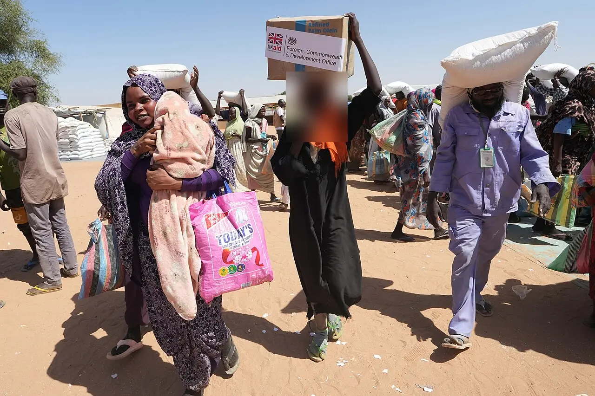
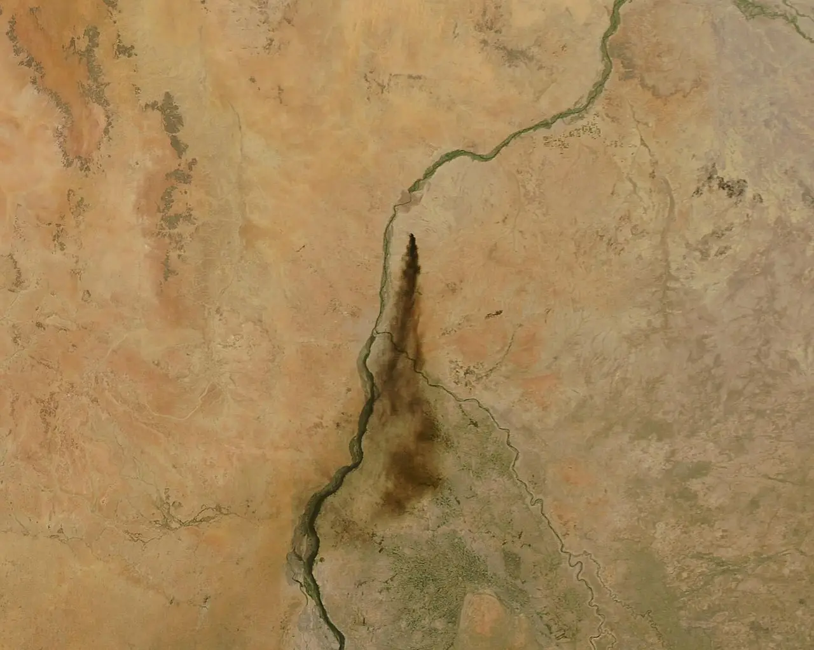
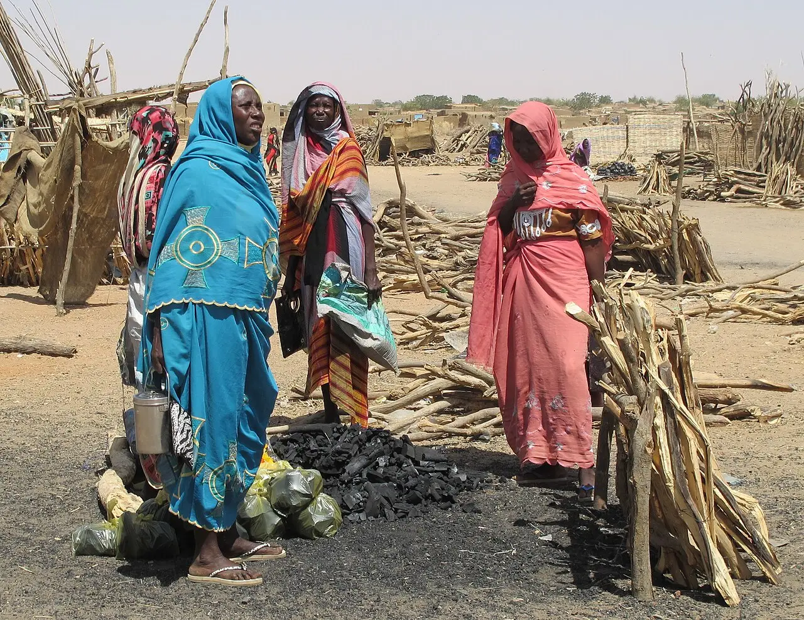
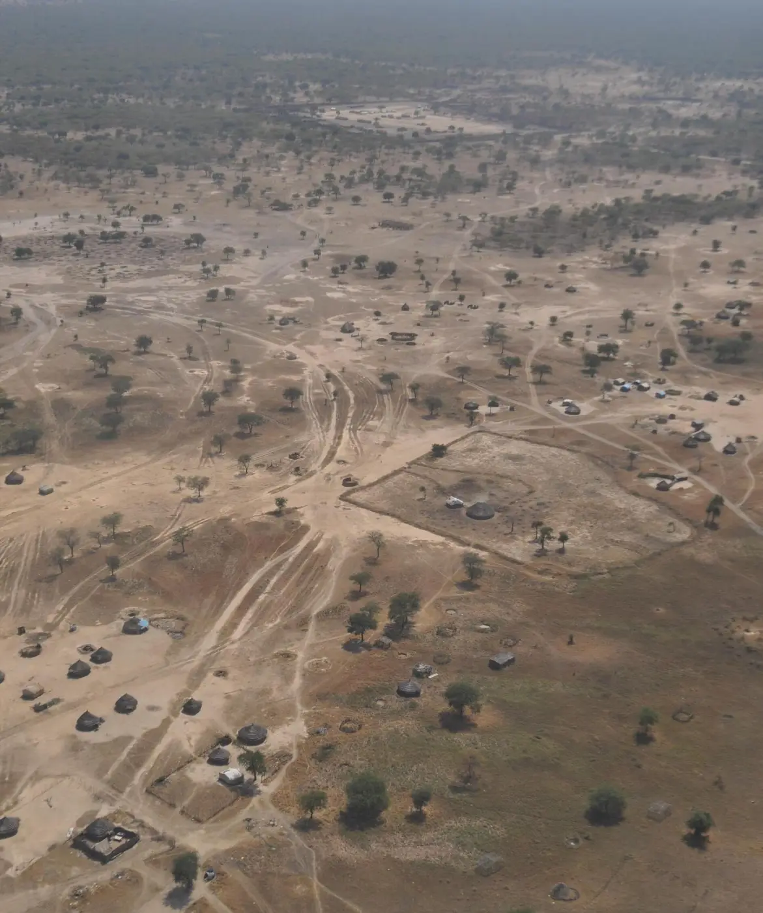

File photo · 2011
File photo · 2011i

In pictures

Photo from the eventi


Photo from the eventi
.jpg){kind=link}

File photo · 2015i


File photo · 2009i

i

 File photo · 2019
File photo · 2019i

 File photo · 2008
File photo · 2008i

 File photo · 2013
File photo · 2013i

Every update
- November 2026
Drone strike on passenger truck kills 11
Lives lostA drone hit a truck carrying about 25 people near Ghubeish on 26 Nov, killing at least 11, a medical source told AFP. The RSF's political wing blamed the army; no army response was reported.
Arab News (AFP) · Edition of Fri 27 NovBlue Nile security holds volunteers, general's relatives
DetentionIntelligence agents have held three Damazin volunteers since 23 Nov, reportedly without lawyers; five relatives and neighbours of a general who joined the RSF were seized in Roseires on 26 Nov. No official comment.
Radio Tamazuj · Dabanga (Arabic) · Edition of Fri 27 NovDrone strikes on homes kill families
Lives lostDrones hit homes in Ed Damazin and El Roseires on 24 Nov, killing at least 16, including 14 from three families, local officials said. They blamed the RSF and SPLM-N; no response was reported.
Dabanga · Dabanga (Arabic) · Edition of Thu 26 NovJournalist and lawyer held without stated charges
SpeechSecurity cells detained journalist Khalid Jibril Ahmed in Kosti on 22 Nov and lawyer Mahmoud Jarad in Er Rahad about a week ago. An official cited unspecified charges for Ahmed; Jarad's whereabouts are unknown.
Darfur24 · Darfur24 (Arabic) · Edition of Wed 25 NovDrone kills eight civilians in West Kordofan
Lives lostA drone strike on a civilian vehicle near Armal killed at least eight people heading to a market, local sources said on 23 Nov. It is believed to be the army's; no side claimed it.
Darfur24 · Darfur24 (Arabic) · Edition of Tue 24 NovDrones kill four around Khartoum, hit UN building
Lives lostDrone strikes blamed on the RSF killed four people around Khartoum on 22 Nov and damaged a UN building with staff inside. The UN called it 'unacceptable'; no RSF comment was reported.
Al Jazeera · ABC News (Australia) · Edition of Mon 23 NovSennar imposes curfew as Blue Nile fighting nears
Freedom of movementSennar's governor ordered a 10pm–4am curfew, citing fears that Blue Nile fighting could spread, as RSF–SPLM-N forces reportedly advanced towards Damazin. Some residents have fled; authorities did not comment to Radio Tamazuj.
Radio Tamazuj · Radio Tamazuj · Edition of Sun 22 NovDrone strikes kill seven in South Kordofan villages
Lives lostDrone strikes on two Buram villages on 19 Nov killed three children at a water pump and four farmers, Radio Tamazuj reported. Activists blamed the army; no army comment was reported.
Radio Tamazuj · Edition of Sat 21 NovDrone strike on Nyala: 37 reported killed
Lives lostThe RSF-led Tasis alliance says an army drone strike killed 37 civilians in Nyala's Al-Mazad district on 19 Nov. Army-affiliated sources say they hit an RSF camp and intelligence headquarters. Neither account is verified.
Radio Dabanga (Arabic) · Edition of Fri 20 NovDrone strike on Kordofan gold mine kills 10
Lives lostWitnesses say a drone fired four missiles at the Bajoun gold-mining site in South Kordofan on 18 Nov, killing at least 10 people. No party claimed it, and no army or RSF statement was reported.
Radio Dabanga · Edition of Fri 20 NovAmnesty: RSF drones killed 37 in El Obeid
Lives lostAmnesty says nine RSF drone strikes on El Obeid in June–August killed 37 civilians, hitting homes, fuel stations and the market with no military target nearby. The RSF denies it and blames the army.
Amnesty International · Edition of Thu 19 NovUN: at least 2,230 civilians killed this year
Lives lostThe UN rights office verified at least 2,230 civilian deaths in Sudan from January to October, over 1,630 by drone strikes, mostly in Kordofan. No army or RSF response was reported.
Radio Dabanga · Edition of Wed 18 NovStrike on Abu Qalb kills up to 15
Lives lostA strike on Abu Qalb, West Kordofan, on 15 Nov killed 13 to 15 civilians, including four children, rights groups say. An army-allied spokesman said his forces hit RSF positions in the area.
Radio Dabanga · Al Jazeera · Edition of Tue 17 NovEl Obeid celebratory gunfire kills up to two
Lives lostGunfire, some from anti-aircraft weapons, celebrating false reports that the army took Al-Nuhud killed one or two people and injured 25 to 45+. Accounts differ on who fired; no official statement reported.
Radio Dabanga · Darfur24 (Arabic) · Edition of Mon 16 NovDrone attacks on power grid darken Sudan's cities
Life & safetyAt least 18 attacks hit power infrastructure in nine-plus states from 20 Oct to 2 Nov. The UN's Denise Brown says dialysis stopped and women give birth without light. No side has claimed them.
Al Jazeera · Radio Dabanga · Edition of Mon 16 NovRelief group says RSF killed 10 in Al-Nuhud
Lives lostA local emergency room says RSF fighters have killed 10 unarmed civilians in Al-Nuhud, West Kordofan, since Thursday, amid looting and a full telecoms blackout. The RSF has not commented.
Anadolu Agency · Edition of Sun 15 NovBlue Nile drone strike toll rises to 16
Lives lostKurmuk's governor says Tuesday's drone strike on displaced people at Bani Shako killed 16, up from nine, with six injured and some missing. He blames the RSF, which has not commented.
Sudan Tribune (Arabic) · Radio Tamazuj · Edition of Sat 14 NovWFP: 900,000 lose food aid in Sudan
Life & safetyFunding cuts shrank WFP's reach in Sudan from over 4 million people in August to just over 3 million, its new chief said on a first visit; it needs $520 million through April.
UN News · Edition of Fri 13 NovUN survey: most Sudanese households lack livelihoods
Land & livelihoodAn IOM survey of 23,736 households found 68% have unmet livelihood needs, 83% among displaced families, and 98% face rising prices. Three South Kordofan localities could not be surveyed.
Dabanga · Edition of Thu 12 NovOCHA: 71 aid workers killed in Sudan, 2025
Life & safetyAt least 71 aid workers were killed and 28 injured in Sudan in 2025, OCHA's annual report says; more than 180 health facilities lost funding.
Dabanga · Edition of Thu 12 NovUNICEF: drones cause most child casualties in Sudan
Lives lostTwo in three child casualties in Sudan this year were caused by armed drones, UNICEF says; up to 15 power stations were hit in October. It could not say who launched them.
UN News · Edition of Wed 11 NovLawyer: army should not hold ICC suspect Haroun
DetentionSudanese lawyer Muaz Hadra said police and courts, not the army, should hold Ahmed Haroun, who faces war-crimes charges at home and an ICC warrant. No army comment was reported.
Radio Tamazuj · Edition of Tue 10 NovSudan's army detains ICC suspect Ahmed Haroun
DetentionSudan's military detained Ahmed Haroun, wanted by the ICC over alleged Darfur crimes, his lawyers and party said; reports differ on where. No army statement was reported; it refused past ICC handovers.
AP via ABC News · Arab News (Reuters) · Radio Tamazuj · Edition of Mon 9 NovFear grows in Damazin as fighting spreads
Life & safetyDamazin residents reported power, water and grain-mill cuts and families fleeing as fighting spread in Blue Nile; one resident said the city was calm. No army or RSF statement was reported.
Radio Tamazuj · Edition of Sun 8 NovUN: Sudan's shelter aid warehouses are empty
Civilian harmUNHCR and IOM said 15.4 million Sudanese need emergency shelter but funds cover about 10%; 936,000 have been helped. "Our warehouses are completely empty," IOM's Sudan chief said.
Al Jazeera · UN News · Edition of Sat 7 NovSecurity summons two striking teachers in Khartoum
AssemblySecurity services summoned two teachers in Ombada over alleged incitement of a strike now in its third week, the Sudanese Teachers Committee said; no statement from the authorities was reported.
Darfur24 · Edition of Fri 6 NovAustralia sanctions Sudan's army and RSF leaders
Right upheldAustralia imposed sanctions and travel bans on army chief al-Burhan, RSF leader Dagalo and two others, citing attacks on civilians, torture and killings; no response from those named was reported.
Radio Tamazuj · Edition of Fri 6 NovDrone strikes kill at least 14 civilians
Lives lostDrone strikes killed at least 14 civilians in West and South Kordofan and Blue Nile on Monday and Tuesday, residents told Radio Dabanga; a Blue Nile group blames the RSF, which had no reported response.
Dabanga · Edition of Thu 5 NovDrone kills two travellers in North Darfur
Lives lostA drone struck a vehicle in Wadi Majrur, Al-Malha locality, on Sunday, killing two civilians, a local rights monitor told Radio Tamazuj; it blames the army, and no army response was reported.
Radio Tamazuj · Edition of Wed 4 NovDrone strikes cut power across eastern Sudan
Lives lostDrones hit three substations in Kassala and near Merowe on Monday, cutting power, and at least 16 power stations were targeted in a week, Anadolu reports; Sudan's government accuses Ethiopia of involvement, Ethiopia gave no immediate comment, and the RSF generally does not comment.
Anadolu · Edition of Tue 3 NovSudan law puts journalists at risk, CPJ says
SpeechCPJ said on Monday that a 19 October change to Article 51 of Sudan's Criminal Act, criminalising online or media support for threats to state security, could bring journalists life in prison or death; the journalists' syndicate warned of prosecutions, and the army did not answer CPJ.
CPJ · Edition of Tue 3 NovBlue Nile's displaced short of food, medicine
Life & safetyDisplaced people in Sudan's Blue Nile state told Radio Tamazuj on Sunday that aid falls short as food and medicines run low and disease spreads. The state aid commissioner puts the displaced at about 27,400 (Dabanga reports the figure as families) and says WFP and others are delivering food, cash and hygiene kits.
Radio Tamazuj · Dabanga · Edition of Mon 2 NovUN chief condemns escalating Sudan drone strikes
Lives lostOn Saturday UN Secretary-General Guterres, through his spokesman, condemned escalating drone attacks by the parties in Sudan, after Monday's strike on Nyala's Tanqonj market killed at least 102 people. The strike has been attributed to the army. No army or RSF response was reported.
Arab News (AFP) · NBC News · Edition of Sun 1 Nov- October 2026
Investigators name 25 commanders over wartime rape
Lives lostThe Centre for Information Resilience, a UK open-source group, says it has reasonable grounds to believe 25 commanders of the RSF, the army and allied forces were directly or indirectly responsible for sexual violence at five sites, including El Fasher and Gezira. Neither force responded to Al Jazeera; both have denied such abuses.
Al Jazeera · Edition of Sat 31 OctUNICEF: five children killed in Nyala strike
Lives lostUNICEF said on Thursday at least five children were killed in Monday's drone strike on a Nyala market. A Yale lab reports a near-total absence of civilian life in El Fasher a year after the RSF took it. No army comment was reported; the RSF says life there is normal.
UN News · Dabanga · Edition of Fri 30 OctUN warns Kordofan sieges risk new atrocities
Lives lostA year after the RSF seized El Fasher, UN officials warned on Wednesday that sieges in Kordofan and Blue Nile could bring new atrocities; UN investigators said they found hallmarks of genocide in El Fasher. No army or RSF response was reported; the RSF says El Fasher is safe for civilians.
Darfur24 · Amnesty UK · Edition of Thu 29 OctDrone strike on Nyala market kills dozens
Lives lostA drone strike on a busy market in Nyala, South Darfur, on Monday evening killed at least 36 people and wounded over 150, MSF said, attributing it to Sudan's army; the rights group Emergency Lawyers says more than 100 died. The army has not commented. The RSF controls Nyala.
MSF · AP via ClickOnDetroit · Edition of Wed 28 OctUN: drones killed 306 in Sudan in October
Lives lostThe UN human rights office says drone strikes it attributes to both the army and the RSF killed at least 306 people in the first three weeks of October, hitting homes, markets, hospitals and displacement sites. The Security Council condemned the Abyei market attack. Neither force's response was reported.
UN News · Edition of Sat 24 OctKhartoum denies Abyei strike; probe sought
Lives lostSudan's foreign ministry said the army has 'absolutely no connection' to Monday's drone strike on Amiet Market, which Abyei officials say killed 153 people, buried in two mass graves; it gave no evidence. The RSF-aligned authorities, who blame the army, asked the UN fact-finding mission to investigate. The African Union condemned the strikes.
Radio Tamazuj · Dabanga · Edition of Fri 23 OctAbyei market strike toll rises to 153
Lives lostAbyei's caretaker information minister says Monday's drone strike on Amiet Market killed at least 153 people, up from 73, with fires still burning; MSF is treating more than 20 wounded. South Sudan blames Sudan's army. A senior Sudanese officer told AP the army hit RSF-bound fuel tankers and does not target civilians.
Al Jazeera · The National · Edition of Thu 22 Oct